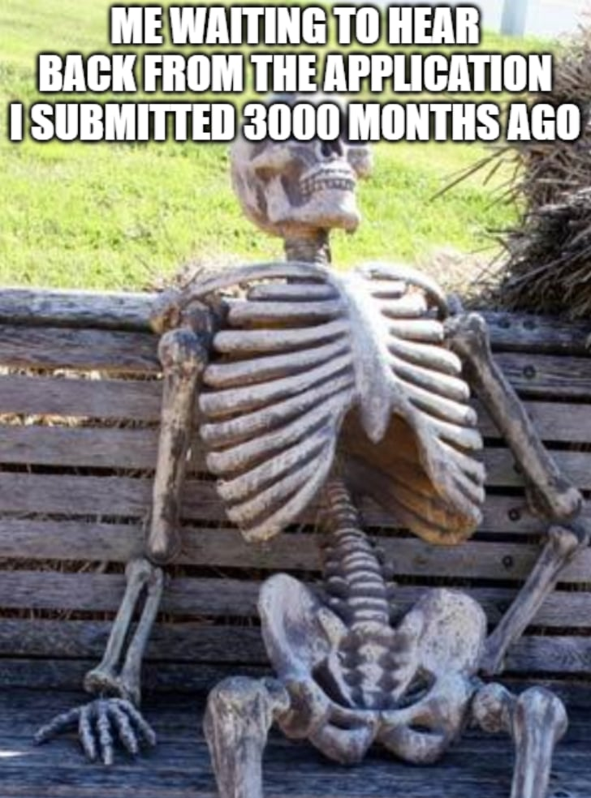

By reading this section, you will be able to answer the following questions:
- When should I start thinking about my PhD Application?
- What are important time stamps for an application?
This is a personal timeline that captures my whole PhD applications.
Initially, I knew I wanted to do a Math PhD in my first year of college. Therefore, I spent my whole college experience preparing for my PhD Application. That being said, you don’t have to. Lots of people I know didn’t know what they wanted until later in their undergraduate, so this is a personal timeline that you don’t have to strictly follow.
I will highlight different parts of the application (i.e. coursework, research, letters, etc.) without systematically introducing them first. I will write about the whole application documents in detail in the next section.
Most PhD programs with funding require application to the Fall entrance. The following table presents a sample Fall 2026 entrance timeline.
Coursework: Took challenging courses to further clarify (to myself) if I want to do graduate school in Maths. Keep a good GPA.
Research: Did research with professors to identity my research interests (and if I enjoy doing research independently)
Coursework: Did the Budapest semesters in Mathematics to broaden my coursework, since my school doesn’t have lots of Math courses and special topics.
Letters: Reach out to professors for recommendation letters. You will need at least 3 letters for your application.
Math GRE (not the general one): I took the Math GRE because I think it would help. However, I did not get the score I wanted, so I did not submit my Math GRE to any of the schools I was applying to. That being said, there are schools that specifically require you to submit your GRE, so always double check! Plan ahead, there’s only a few chances to take the Math GRE every year!
School list: This is the most important part of the pre-application process. I don’t care if you are a math genius. If you choose a school that does not fit you, you will get a rejection eventually. School matching is the most important step that people usually underestimate. Build your school list over the summer, and I would write in details soon.
Networking: Reach out to professors. More details to come! This will take tons of your time, and honestly, I’m still not sure how much this helped (in Math).
Statement of Purpose/ Personal Statement: Did a few drafts, tailored them for each school. This was a lot of writing. Ask for feedback from 1 of my professors, 1 postdoc friend, 1 best friend, 1 stranger, and that was all. Getting too much comments wouldn't help that much.
Tailored my resume, filled out an online application for each school. I submitted my application at least 1 week prior to the deadline to prevent technical error.
(International students) Get your English Proficiency test if you don’t go to an English-speaking school/ school in an English-speaking country!
Interview: I only got 1 interview with University of Delaware I started to hear back from schools in February. The wait time was brutal, and I will share more tips later. After getting a few acceptances, I contacted schools for personalized visits so that I can talk to graduate students and professors in person. This is important, and you should do it if you are in the US.
However, results came extremely late this year, and it would be my expectation for the upcoming cycles. Programs were unsure about their funding. Lots of schools cut their cohort in half due to funding loss. Thus, expect to also keep your GPA in a good shape and do research if possible. You will never know (but hopefully not) if you need to reapply next cycle :(
Waitlist: I was waitlisted unofficially by most schools. In late March, I presented my research at the MAA meeting section of Illinois and got the Outstanding Undergraduate Research Award. I was also awarded the department Honor Award in Mathematical Sciences, and after updating my recent achievement by email to some programs, I got off their waitlist immediately. The key takeaway from my year - be extremely patient in this uncertain time.
